Clutch Removal and Installation
NOTE: For manual transmission removal procedures, refer to Manual Transmission/Transaxle/Service and Repair. Service and RepairPRESSURE PLATE, CLUTCH DISC AND MID PLATE
Removal
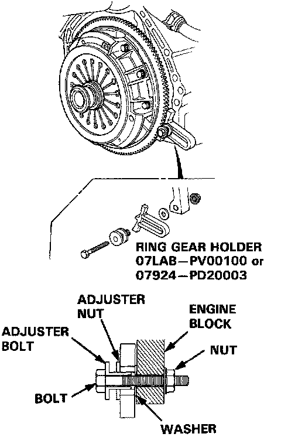
1. Install the special tools.
2. To prevent warping, unscrew the pressure plate mounting bolts in a crisscross pattern in several steps, then remove the pressure plate and the 1st clutch disc.
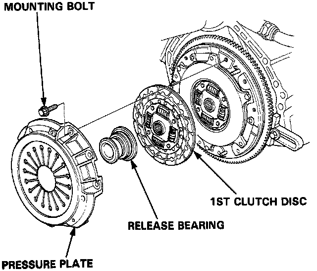
3. Remove the release bearing from the pressure plate.
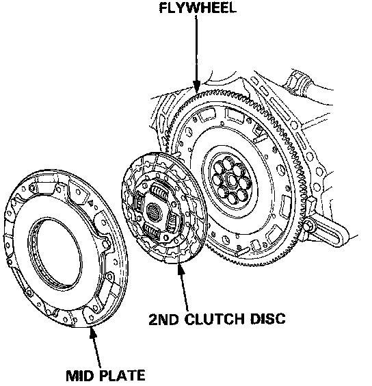
4. Remove the mid plate and the 2nd clutch disc.
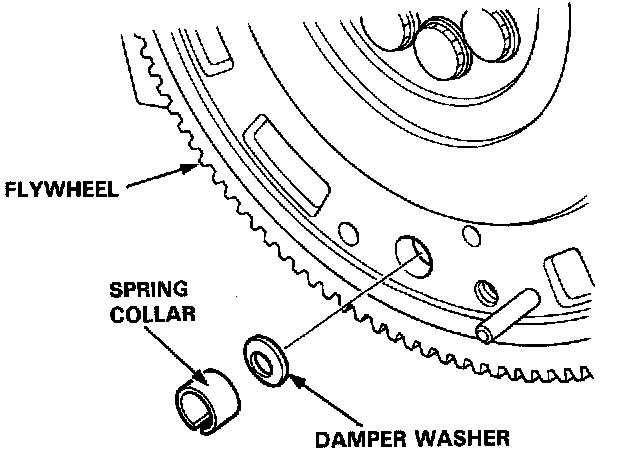
5. Remove the spring collar and damper washer from the flywheel.
Installation
NOTE:
^ Install the pressure plate, clutch discs, and mid plate as a set.
^ Do not mix-up the 1st and 2nd clutch discs. The 2nd clutch disc has a flat plate between the two friction surfaces. The 1st clutch disc has a spring plate between the two friction surfaces.
^ Use only Super High Temp Urea Grease (P/N O8798-9OO2).
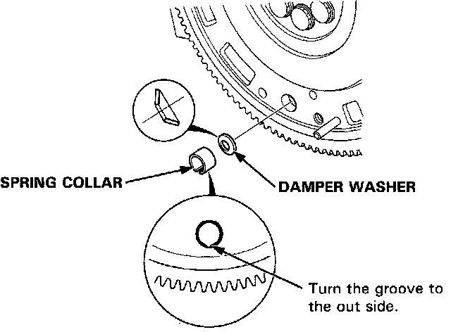
1. Install the damper washer and spring collar.
2. Install the special tool.
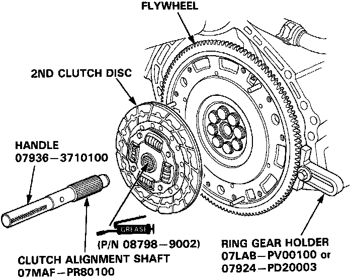
3. Install the 2nd clutch disc using the special tools.
NOTE: The index mark on the 2nd clutch disc should face away from the flywheel.
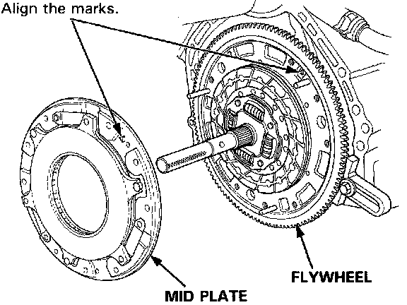
4. Install the mid plate.
NOTE: Align the mark on the flywheel with the mark on the mid plate.
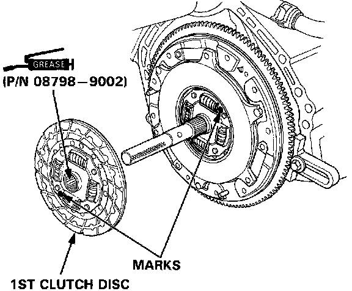
5. Install the 1st clutch disc.
NOTE:
^ The marks on the 1st and 2nd clutch discs should be 180° apart.
^ The index mark on the 1st clutch disc should face away from the flywheel.
6. Install the release bearing on the pressure plate.
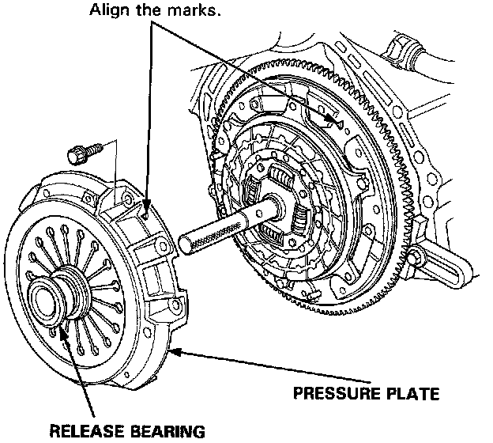
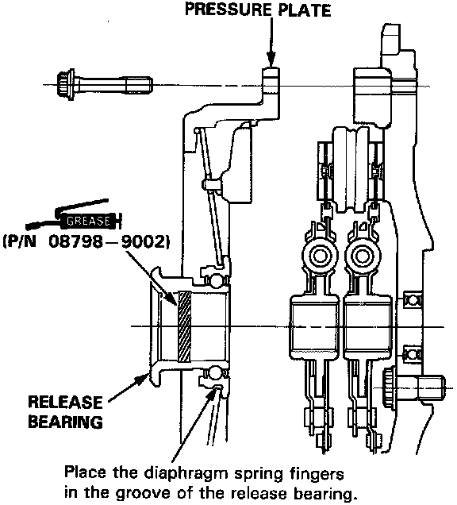
7. Install the pressure plate.
NOTE:
^ Align the mark on the mid plate with the mark on the pressure plate.
^ After installing, make sure the release bearing is secure.
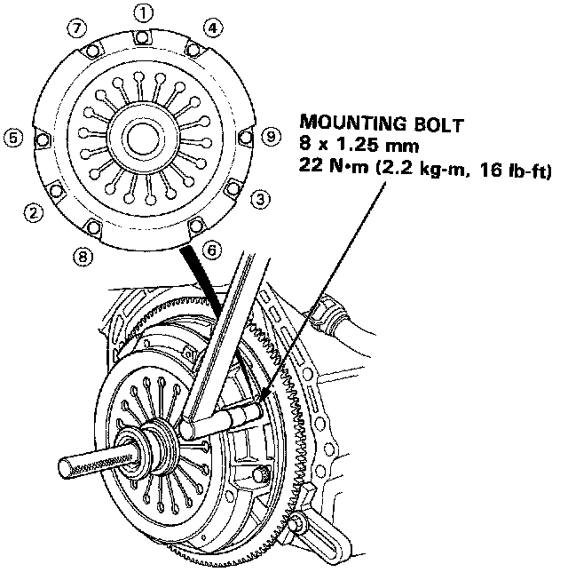
8. Torque the mounting bolts in a crisscross pattern as shown. Tighten them several steps to prevent warping the diaphragm spring.
NOTE: Place the diaphragm spring fingers in the groove of the release bearing.
9. Remove the special tools.
10. Initialize the mid plate guides. Mid Plate Guide Initialization